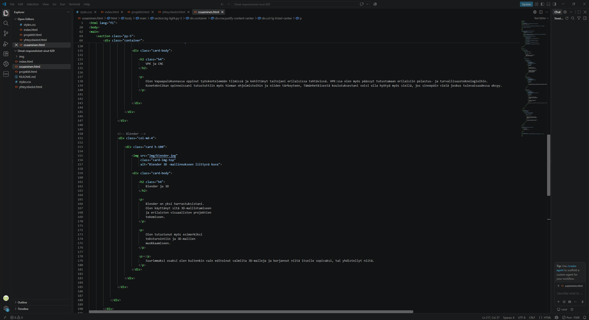
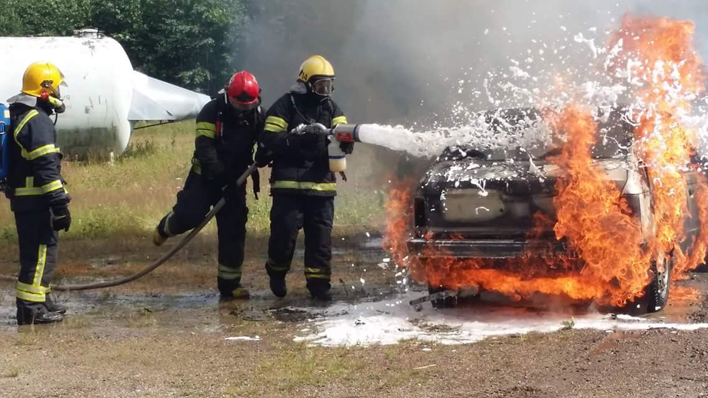
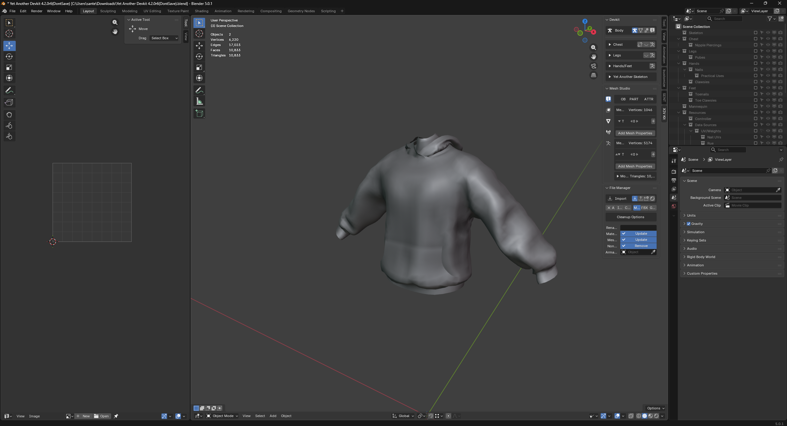

Osaamiseni / kokemukseni
Olen opintojeni ja harrastusteni kautta päässyt tutustumaan useisiin eri teknologioihin ja työkaluihin.

Ohjelmointi
Opiskelen tällä hetkellä ohjelmistokehittäjäksi ja olen opetellut ohjelmoinnin perusteita.
Olen käyttänyt esimerkiksi Pythonia erilaisissa harjoituksissa ja projekteissa. Ohjelmoinnissa haluan kehittää erityisesti ongelmanratkaisukykyäni.

VPK ja CNC
Olen Vapaapalokunnassa oppinut työskentelemään tiimissä ja kehittänyt taitojani erilaisissa tehtävissä. VPK:ssa olen myös päässyt tutustumaan erilaisiin pelastus- ja turvallisuusteknologioihin. Konetekniikan opinnoissani tutustuttiin myös hieman ohjelmistoihin ja niiden tärkeyteen, Tämänhetkisestä koulutuksestani voisi olla hyötyä myös siellä, jos sinnepäin vielä joskus tulevaisuudessa eksyy.

Blender ja 3D
Blender on yksi harrastuksistani. Olen käyttänyt sitä 3D-mallintamiseen ja erilaisten visuaalisten projektien tekemiseen.
Olen tutustunut myös esimerkiksi teksturointiin ja 3D-mallien muokkaamiseen.
Suurimmaksi osaksi olen kuitenkin vain editoinut valmiita 3D-malleja ja korjannut niitä itselle sopivaksi, tai yhdistellyt niitä.Kehitän osaamistani
Ohjelmistokehittäjän opinnot ovat vielä käynnissä, joten tarkoitukseni on jatkuvasti opetella uusia asioita ja kehittää nykyistä osaamistani.
Portfolioon lisään myöhemmin uusia projekteja ja taitojani sitä mukaa, kun opin niitä.